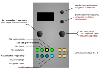

Quadraturia

| I/O | Function |
|---|---|
| TR1 | Reset phase (all LFOs) |
| TR2 | Freeze (all LFOs stop in their tracks and hold current value while TR2 is high) |
| TR3 | Tap tempo lock or trigger/gate input when used in Tap tempo mode. |
| TR4 | Divide/Multiply frequency (while TR4 is high — see TR4: MULT) |
| CV1 | Master frequency |
| CV2 | Wave shape |
| CV3 | Phase/frequency spread |
| CV4 | (mappable) : coupling, shape spread, range, offset, amplitude modulation (a > b, b > c, or c > d) |
| A, B, C, D | LFO channel outputs |
Controls
| Control | Function |
|---|---|
| Left encoder (turn) | Increase or decrease frequency of master LFO |
| Left encoder (press) | Toggle frequency control between Coarse and Fine control. |
| Right encoder (turn) | Navigation mode: move up and down through the menu items. Edit mode: increase or decrease the value being edited. |
| Right encoder (press) | Toggle between menu navigation (selection) mode and value editing mode |
| Right encoder (long press) | App selection menu |
| Up button | Increment frequency by 32 |
| Up button long press | screen saver short cut |
| Down button | Decrement frequency by 32 |
| Down button long press | reset waveform phase to zero on all channels |
Settings
| Setting | Meaning |
|---|---|
Coarse or Fine (frequency) |
When in normal mode (not tap tempo mode), frequency is adjused with the left encoder. The frequency is displayed above the line in the menu. Clicking on the left encoder toggles between (C)oarse and (F)ine frequency adjustments. There are 256 steps for coarse adjustment, and each unit of the coarse adjustment is divided into 256 steps for fine adjustment. If tap tempo mode is enabled, the frequency adjustment using the left encoder is disabled. |
Tap tempo |
enables or disables tap tempo mode. The tap tempo trigger/clock input is TR3. |
Shape |
controls the shape of the primary waveform (LFO1), as shown in the preview waveform. See below for a diagram of all the waveforms in the wavetable. |
Shape spread |
sets the difference in wavetable position between each channel (and thus the differences in the wave shape for chennels B, C and D. |
Phase/frq spread |
sets the phase or frequency offset between each channel. Values greater than zero cause the phase to be offset incrementally in channels B, C and D wrt channel A. When Phase/frq spread is set to its maximum value of 127, the phase shift is 90 degrees on channel B, 180 degrees on channel C and 270 degrees on channel D. Values for Phase/frq spread of less than zero cause a progressive frequency shift (detune) across channels B, C and D wrt channel A, rather than a phase shift. Note: when frequency division or multiplication is set on channels B, C or D (see B freq ratio etc below), only 90 degrees of phase shift is available on each of channels B, C and D. |
Coupling |
sets the degree of phase-modulation “bleed” between each successive channel. |
Output range |
sets the overall output range for all channels. The range of this settings goes from 0 (no output) to 230, which equates to a nominal output range from about -3.5V to +6V. By default, with the Offset setting (see below) at zero, the output range is asymmetric. By reducing the Output range and then setting a positive Offset, the output can be shifted so that it is unipolar or otherwise offset at the level desired. |
Offset |
shifts the output on all channels up or down by up to several volts. The range is -128 to 127, with a default of zero. Note that this is an internal offset and the absolute output voltage range is constrained by the hardware to about -3.5V to +6V. Nonetheless, by using it in conjunction with reduced settings of the Output range parameter, it is possible to make the output entirely unipolar, or even entirely negatively unipolar, if desired. Note that the Output value is added directly to the value sent to the DAC, and therefore positive or negative offsets (that is, non-zero offsets) without any reduction in the Output range setting will result in the 16-bit values sent to the DAC overflowing and wrapping around. This will cause waveform deformations, which may be useful or interesting. To remove any such wrap-around deformation, reduce the Output range setting when using non-zero offsets. If Output range and Offset are left at their defaults of 230 and zero respectively, no waveform deformation will occur. |
Freq range |
sets the frequency range for the quadrature LFOs, with self-explanatory settings of cosm (cosmological), geol (geological), glacial (glacial), snail, sloth, lazy (very lazy), lazy, vslow (very slow), slow, med (medium), fast and vfast (very fast). The faster settings extend into audio range. The slowest period for one cycle of the LFO on the cosm setting exceeds 18 hours. Note that Quadraturia does not, and is not intended to track 1V/octave. |
B freq ratio |
sets the frequency ratio at which LFO2 (channel B) runs with respect to the master LFO (LFO1, channel A). The default is unity, so that it runs at the same frequency as channel A. Available ratios are 16/1, 15/1, 14/1, 13/1, 12/1, 11/1, 10/1, 9/1, 8/1, 7/1, 6/1, 5/1, 4/1, 3/1, 5/2, 2/1, 5/3, 3/2, 5/4, 1/1 (unity), 4/5, 2/3, 3/5, 1/2, 2/5, 1/3, 1/4, 1/5, 1/6, 1/7, 1/8, 1/9, 1/10, 1/11, 1/12, 1/13, 1/14, 1/15 and 1/16. 16/1 means the the frequency is multiplied by 16. 1/16 means the frequency is divided by 16, and so on. |
C freq ratio |
does the same as B freq ratio, except for the channel C LFO. |
D freq ratio |
likewise |
B XOR A |
if enabled causes the 16 bits of the channel B LFO current value to be bit-wise XORed with the bits of the channel A LFO current value before being output on channel B. Available settings are Off, or 1 to 8, where the number refers to the number of bit of right-shift that are carried out before bit-XORing. bit-XORing can create digital noise at audio rates, but at slower modulation rates, all sorts of interesting “toothed” or other geometric patterns may emerge - but with very sharp transitions in amplitude. Try feeding it into the cut-off of a LPF (a technique shown in a Bastl video). |
C XOR A |
if enabled causes the 16 bits of the channel C LFO current value to be bit-wise XORed with the bits of the channel A LFO current value. |
D XOR A |
if enabled causes the 16 bits of the channel D LFO current value to be bit-wise XORed with the 16 bits of the channel A LFO current value. |
B AM by A |
set the level of cross-channel amplitude modulation (AM), deaulting to none (zero), up to 127. Note that the amplitude modulation is inverted, so that higher values of the waveform in channel A result in lower amplitudes of the waveform in channel B. If the relative frequency of channel B is set at unity or lower, then a type of waveshaping occurs. |
C AM by B |
as for B AM by A except that the amplitude of channel C is modulated by the current output value of channel B. |
D AM by B |
as for B AM by A except that the amplitude of channel D is modulated by the current output value of channel C. |
CV4: DEST |
CV4 destination: cplg (coupling), sprd (shape spread), rng (range), offs (offset), a -> b (B AM by A), b -> c (C AM by B), or c -> d (D AM by B) |
TR4: MULT |
gated frequency division/multiplication factor (TR4): /8, /4, /2, x2, x4, x8 |
Quadraturia is a port of of the quadrature wavetable LFO that is available as the “Easter egg” in the Mutable Instruments Frames module. However, Quadraturia adds voltage control over three of the four LFO parameters (as well as CV control of frequency/rate of the LFO, as in Frames). Because the background ISR of o_C runs at 16.7KHz instead of 32KHz as in Frames, the behaviour of Quadraturia may not be identical to the Frames Easter egg, but it should be very close, and is nonetheless a very useful and flexible source of modulation voltages. For more details of how the Frames Easter egg LFO behaves, see the relevant section of the Frames Manual.
Quadraturia also incorporates the “predictive” tap-tempo capability from the Tap LFO mode in the Mutable Peaks module. Details are given in the Tap tempo section below.
Internally, there are four LFOs (LFO1 to LFO4), with LFO2 to 4 running at some ratio of the (master) frequency of LFO1 (by default, that ratio is one, so all the LFOs run at the same frequency). The wave shape, phase of frequency modulation of LFO2 to 4 can be changed, relative to those parameters for LFO1, using the Shape spread, phase/frequency spread and coupling controls (see table below).
Waveforms in the wavetable

Graphic courtesy of Mutable Instruments.
Tap tempo mode
The “predictive” tap tempo facility used in the Tap LFO mode in the Mutable Peaks module has been added to Quadraturia in v1.3. This allows the period of the LFO waveform output on channel A to be locked to the period of “taps” or pulses (or, in fact, the rising edge of any regular input signal of more than about 1V amplitude) input on TR3. This will synchronise to both regular clock inputs as well as regular rhythms with unequal spacing of the taps. However, it cannot predict the future, and thus it will not be able to sync to irregular rhythms or randomly-timed pulses.
The frequency/period of the output on channels B, C and D will be the same as channel A if the frequency ratio setting for those channels is 1.0 (unity). Otherwise, it will be some multiple or division of the channel A frequency. In other words, the frquency ratio settings for channels B, C and D are honoured in tap tempo mode as well as in normal mode.
Screensaver display
The screen is divided into quadrants, each showing a rolling display of the output values on each of channels A to D.
Tips
-
To achieve the classic quadrature LFO patch (incremental 90° phase offset on outputs), set the phase/frq spread to +127.
-
Try mixing the some of the outputs with a DC-coupled mixer (such as the Mutable Instruments Shades or Links modules) in order to create even more complex waveforms.